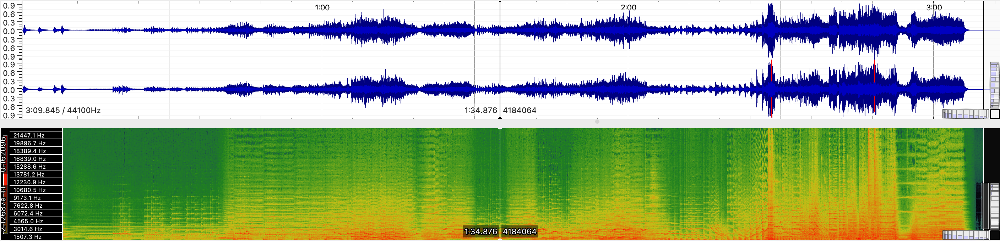
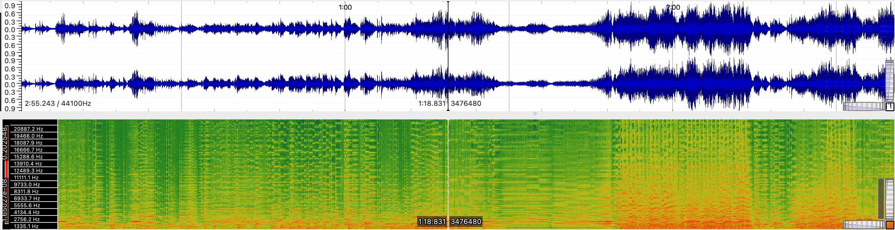
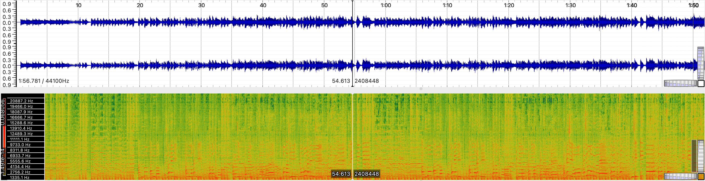

In this section, I selected 3 music tracks related to my theme and they are all from the Studio Ghibli movie soundtracks.
1. One Summer Day (from Spirited Away)
1. A Journey (from The Wind Rises)
1. Stroll (from My Neighbor Totoro)
| Title | One Summer Day | A Journey (A Dream of Flight) | Stroll (Hey Let's Go) |
|---|---|---|---|
| Artist | Joe Hisaishi | Joe Hisaishi | Azumi Inoue |
| Composer | Joe Hisaishi | Joe Hisaishi | Joe Hisaishi |
| Year | 2001 | 2013 | 1988 |
| Album | Spirited Away | The Wind Rises | My Neighbor Totoro |
| Genre | Classical, Stage and Screen | Country, Stage and Screen | lullaby |
| Instrument | Piano with orchestra | Guitar and accordions with orchestra | Vocal with orchestra |
| Copyright | CC BY-NC-SA | CC BY-NC-SA | CC BY-NC-SA |
| Audio Format | MP3 | MP3 | MP3 |
| Source | YouTube Link to Audio |
YouTube Link to Audio |
YouTube Link to Audio |
| Number of Channels | 2 | 2 | 2 |
| Sample Rate | 44.1kHz | 44.1kHz | 44.1kHz |
| Bits per second | 128kbps | 128kbps | 128kbps |
| Duration | 3:10 | 2:55 | 1:57 |
For this task, I generated the spectrograms for the 3 tracks in SonicVisualizer
Below are the Waveform (upper) and Spectrograms (lower) analysis of the audios:
One Spirited Away

A Journey (A Dream of Flight)

Stroll (Hey Let's Go)
